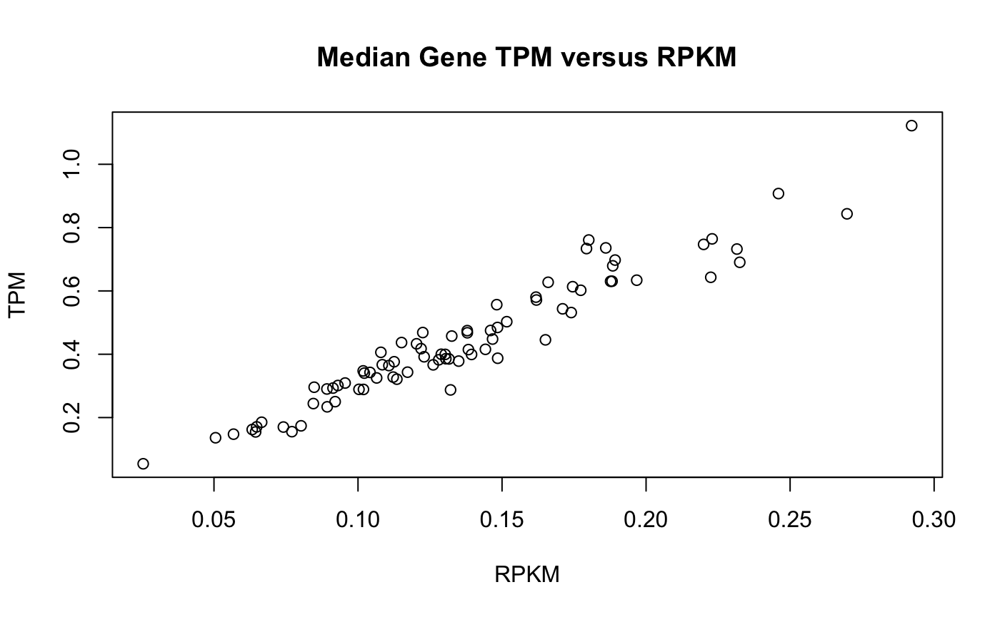
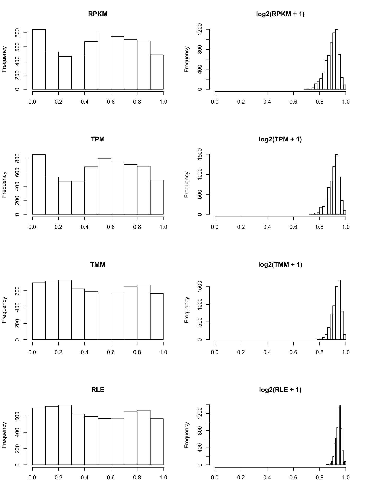

RNA-Seq Data Scaling and Normalization
Eric Reed & Stefano Monti
Source:vignettes/docs/RNAseq_ScalNorm.Rmd
RNAseq_ScalNorm.RmdRemove zero counts
# Find sums of counts for each each gene
geneWiseCounts <- apply(exprs(hnsc), 1, sum)
head(geneWiseCounts)# What this looks like## ENSG00000186132 ENSG00000182584 ENSG00000174799 ENSG00000251025 ENSG00000116691
## 38822 17274 55657 1 163764
## ENSG00000204982
## 174
# Find genes with at least 1 counts across all samples
CountGreater0 <- geneWiseCounts > 0
head(CountGreater0)## ENSG00000186132 ENSG00000182584 ENSG00000174799 ENSG00000251025 ENSG00000116691
## TRUE TRUE TRUE TRUE TRUE
## ENSG00000204982
## TRUE
# How many genes will be removed (Notice the !)
sum(!CountGreater0)## [1] 3219
# Subset hnsc for CountGreater0 == TRUE
hnsc <- hnsc[ CountGreater0, ]
hnsc## ExpressionSet (storageMode: lockedEnvironment)
## assayData: 31203 features, 80 samples
## element names: exprs
## protocolData: none
## phenoData
## sampleNames: sample150 sample383 ... sample009 (80 total)
## varLabels: patient.age_at_initial_pathologic_diagnosis
## patient.anatomic_neoplasm_subdivision ...
## patient.year_of_tobacco_smoking_onset (25 total)
## varMetadata: labelDescription
## featureData
## featureNames: ENSG00000186132 ENSG00000182584 ... ENSG00000141338
## (31203 total)
## fvarLabels: ensembl_gene_id entrezgene ... description (9 total)
## fvarMetadata: labelDescription
## experimentData: use 'experimentData(object)'
## Annotation: RNASeq raw counts
# Raw Expression values are counts
exprs(hnsc)[1:5, 1:5]## sample150 sample383 sample172 sample431 sample435
## ENSG00000186132 429 343 671 253 675
## ENSG00000182584 179 392 224 81 157
## ENSG00000174799 657 132 500 221 555
## ENSG00000251025 0 0 0 0 0
## ENSG00000116691 1351 3930 1054 896 1526Reads (Fragments) Per Kilobase Million and Transcripts Per Million
Transcript Lengths
# Read in table transcript length (and GC content which we don't need)
len <- read.csv(file.path(system.file("extdata", package="BS831"), "GC_lengths_GRCh38.87.csv"), row.names = 1)
head(len)## Length GC
## ENSG00000000003 4535 0.4165380
## ENSG00000000005 1610 0.4248447
## ENSG00000000419 1207 0.3976802
## ENSG00000000457 6883 0.4137731
## ENSG00000000460 5967 0.4298643
## ENSG00000000938 3474 0.5731146
# Subset data for transcripts that are in the transcript length reference file
hnsc <- hnsc[rownames(hnsc) %in% rownames(len),]
# Sort data by genes in hnsc
len <- len[rownames(hnsc),]
# Divide each length by 1000 to get number of kilobases
len$KB <- len$Length/1000Reads (Fragments) Per Kilobase Million (RPKM) and Transcripts Per Million (TPM) are metrics to scale gene expression to achieve two goals
- Make the expression of genes comparable between samples.
- Make the expression of different genes comparable.
For (1.), the library sizes (number of total reads) will always differ between samples as a technical artifact of RNA sequencing. For (2.), the size of RNA transcripts of each gene is different and we expect more reads to be counted in larger transcripts.
RPKM and TPM are very similar metrics. For each gene in each sample …
\[ RPKM_{gene_i} = \frac{\frac{Counts_{gene_i}}{ \sum^G_{i=1}Counts_{gene_i}}\times 1E6}{Length_{gene_i}/1000} \]
\[ TPM_{gene_i} = \frac{\frac{Counts_{gene_i}}{Length_{gene_i}/1000}}{\sum_{i=1}^G \frac{Counts_{gene_i}}{Length_{gene_i}/1000}} \times 1E6 \] Where \(G\) is the total number of genes. The difference is subtle, but notice that the library size for RPKM we scale the library size first (sum of raw counts), where for TPM we scale for the transcript size first, and then scale by the the sum of these transformed counts. Only TPM ensures that the scaled library sizes are equal across samples, where the sum of RPKM values differ between samples.
RPKM (FPKM)
# Create new hnsc object, don't overwrite the previous
hnscRPKM <- hnsc
# Scale each transcript by the total library size (Total Number of Reads)
expPKM <- apply( exprs(hnscRPKM), 2, function(x) { x / sum(x) * 1E6} )
# Divide by the transcript length
exprs(hnscRPKM) <- apply(expPKM, 2, function(x){ x / len$KB })
exprs(hnscRPKM)[1:5, 1:5]## sample150 sample383 sample172 sample431 sample435
## ENSG00000186132 1.8531030 2.9281822 3.4937031 2.0747846 3.3318040
## ENSG00000182584 0.5901988 2.5544244 0.8902551 0.5070380 0.5915321
## ENSG00000174799 0.5084694 0.2018994 0.4664345 0.3247147 0.4908241
## ENSG00000251025 0.0000000 0.0000000 0.0000000 0.0000000 0.0000000
## ENSG00000116691 3.2023256 18.4104498 3.0114243 4.0320730 4.1333110TPM
# Create new hnsc object, don't overwrite the previous
hnscTPM <- hnsc
# Divide each gene by transcript length
expPKB <- apply( exprs(hnscTPM), 2, function(x){ x / len$KB } )
# Divide by the transcript length
exprs(hnscTPM) <- apply( expPKB, 2, function(x) { x / sum(x) * 1E6} )
exprs(hnscTPM)[1:5, 1:5]## sample150 sample383 sample172 sample431 sample435
## ENSG00000186132 5.996336 7.6391141 10.667817 7.139777 10.336981
## ENSG00000182584 1.909786 6.6640455 2.718342 1.744826 1.835239
## ENSG00000174799 1.645323 0.5267203 1.424230 1.117413 1.522791
## ENSG00000251025 0.000000 0.0000000 0.000000 0.000000 0.000000
## ENSG00000116691 10.362199 48.0296365 9.195207 13.875225 12.823671Comparison of TPM and FPKM
For TPM, scaled total and mean library sizes are consistent across samples
## sample150 sample383 sample172 sample431 sample435 sample038
## 309039.2 383314.4 327499.3 290595.2 322318.9 345974.5## sample150 sample383 sample172 sample431 sample435 sample038
## 1e+06 1e+06 1e+06 1e+06 1e+06 1e+06## sample150 sample383 sample172 sample431 sample435 sample038
## 9.937271 12.325617 10.530864 9.344196 10.364284 11.124940## sample150 sample383 sample172 sample431 sample435 sample038
## 32.15537 32.15537 32.15537 32.15537 32.15537 32.15537
## Plot gene-medians
hnscRPKMmedian <- apply(exprs(hnscRPKM), 2, median)
hnscTPMmedian <- apply(exprs(hnscTPM), 2, median)
plot(hnscRPKMmedian, hnscTPMmedian, xlab = "RPKM", ylab = "TPM", main = "Median Gene TPM versus RPKM")
Log2 Transform
For general purposes, it is common to log-transorm RNA-Seq count data. This makes the data resemble a normal distrubution, making it more appropriate for a number of techniques which assume normality, such as Pearson correlation or classic linear modelling. Log base 2 is a common convention for transforming count data, as the interpretation of the values is relatively straightforwards, i.e. a 1 unit change in \(Log_2\) is a two-fold change in expression. We need to add 1 (a pseudocount) to the expression of each gene before log transforming to ensure that 0 counts aren’t transformed to \(-\infty\), (\(log(0) = -\infty\), \(log(1) = 0\)).
# Log2 Transform
## RPKM
hnscRPKM_log2 <- hnscRPKM
exprs(hnscRPKM_log2) <- log(exprs(hnscRPKM) + 1, 2)
# TPM
hnscTPM_log2 <- hnscTPM
exprs(hnscTPM_log2) <- log(exprs(hnscTPM) + 1, 2)Sample-Level Pearson Correlation
## RPKM
CORhnscRPKM <- cor(exprs(hnscRPKM))
## Log2(RPKM + 1)
CORhnscRPKM_log2 <- cor(exprs(hnscRPKM_log2))
## TPM
CORhnscTPM <- cor(exprs(hnscTPM))
## Log2(TPM + 1)
CORhnscTPM_log2 <- cor(exprs(hnscTPM_log2))
# Plots
par(mfrow=c(2,2))
hist(CORhnscRPKM, main = "RPKM", xlab = "", xlim = c(0, 1))
hist(CORhnscRPKM_log2, main = "log2( RPKM + 1)", xlab = "", xlim = c(0, 1))
hist(CORhnscTPM, main = "TPM", xlab = "", xlim = c(0, 1))
hist(CORhnscTPM_log2, main = "log2( TPM + 1)", xlab = "", xlim = c(0, 1))
We observe the correlation between samples is much higher for \(log_2\) transformed data, This is because the \(log_2\) adheres to the normality assumption of Pearson correlation well.
Trimmed Mean of M-values (TMM) and Relative Log Expression (RLE)
Trimmed mean of M-values (TMM) and Relative Log Expression (RLE), the default scaling method deployed by edgeR and DESeq2, respectively, are more sophisticated approaches. They are based on the property that RNA-seq does not measure the absolute abundance of transcripts, but rather the relative abundance of transcripts in a sample. This means that quantification of highly expressed genes comes at the cost of quantifying more lowly expressed genes, as they will use up more of the library size. Each makes the assumption that the majority of genes have similar expression across samples.
TMM
library(edgeR)
# Normalize expression
hnscTMM <- hnscTMM_log2 <- hnsc
DGE <- DGEList(hnscTMM) # Create edgeR specific object
DGE <- calcNormFactors(DGE, method = "TMM") # Calculate Scaling Factors
exprs(hnscTMM) <- cpm(DGE,log=FALSE) # Calculate counts per million
exprs(hnscTMM_log2) <- log(exprs(hnscTMM) + 1, 2) # Calculate log2 counts per millionRLE
library(DESeq2)
hnscRLE <- hnscRLE_log2 <- hnsc
dds <- DESeqDataSetFromMatrix(exprs(hnscRLE), pData(hnscRLE), formula( ~ 1)) # Create DEseq2 specific object
dds <- estimateSizeFactors(dds) # Estimate scaling factors
exprs(hnscRLE) <- counts(dds, normalized=TRUE) # Get counts
exprs(hnscRLE_log2) <- log(exprs(hnscRLE) + 1, 2) # Calculate log2 countsSample-Level Pearson Correlation
# Find correlation of TMM and RLE
## TMM
CORhnscTMM <- cor(exprs(hnscTMM))
## Log2(TMM + 1)
CORhnscTMM_log2 <- cor(exprs(hnscTMM_log2))
## RLE
CORhnscRLE <- cor(exprs(hnscRLE))
## Log2(RLE + 1)
CORhnscRLE_log2 <- cor(exprs(hnscRLE_log2))
par(mfrow=c(4,2))
hist(CORhnscRPKM, main = "RPKM", xlab = "", xlim = c(0, 1))
hist(CORhnscRPKM_log2, main = "log2(RPKM + 1)", xlab = "", xlim = c(0, 1))
hist(CORhnscTPM, main = "TPM", xlab = "", xlim = c(0, 1))
hist(CORhnscTPM_log2, main = "log2(TPM + 1)", xlab = "", xlim = c(0, 1))
hist(CORhnscTMM, main = "TMM", xlab = "", xlim = c(0, 1))
hist(CORhnscTMM_log2, main = "log2(TMM + 1)", xlab = "", xlim = c(0, 1))
hist(CORhnscRLE, main = "RLE", xlab = "", xlim = c(0, 1))
hist(CORhnscRLE_log2, main = "log2(RLE + 1)", xlab = "", xlim = c(0, 1))
Once again, we observe the correlation between samples is much higher for \(log_2\) transformed data, and even moreso for TMM and RLE scaled data.